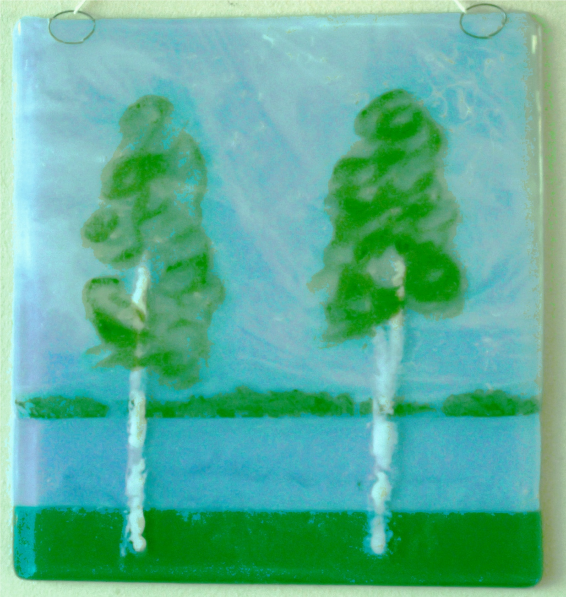

Maisema

Tämän työn idea lähti Juha Tapion laulusta "Kaksi puuta".
Tässä kokeilin kahta uutta tekniikkaa.
Taivaan poutapilvet syntyivät kun sinisen opaakin lasin päälle lisäsin
marmoroidun kirkasta ja valkoista lasin. Pilvet näkyvät taivaankannesta irrallaan.
Meri on samaa sinistä kuin taivas. Alaosaan lisäsin siis kirkaan lasin taivaan jatkoksi.
Puut on maalattu erikseen .
Valkoiset rungot on maalattu ensin liimavedellä
ja sitten ripoteltu valkoista lasijauhetta.
Lehvästöä varten tein väriseoksen vihreästä lasijauheesta ja painopastasta.
Painopasta on öljy/vesi emulsio, jolla voi säätää väriaineen juoksevuutta.
Käytin kohtalaisen ohutta seosta ja notkeaaa sivellintä, jolloin syntyy
vesivärimäinen jälki.
Viimeisenä työvaiheena sulatin puut taustan päälle,